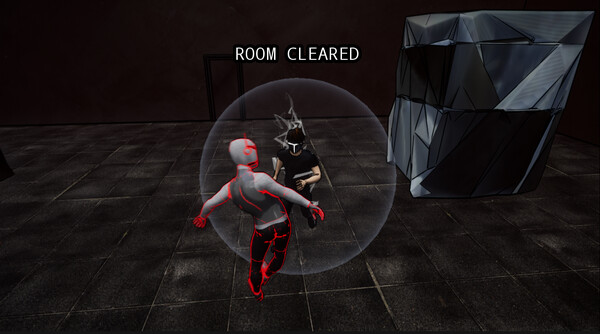
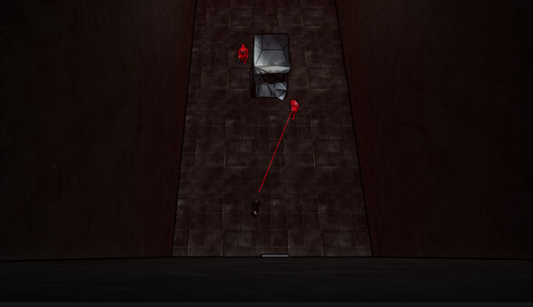

Terminal V Tech Demo (solo project)
For Terminal V, my goal was to experiment with alternative player movement systems. By using the mouse to control the character’s position (rather than WASD to control velocity), players get to experience what it’s like to be a speedster with almost no limits, something that games have historically struggled to convey.
Designing a Unique Movement Scheme


It makes sense why the vast majority of modern games have the same controls (WASD and mouse): they're intuitive and easy for beginners to learn. However, when I thought more about this, I realized unique control schemes would open new design space for action games. I thought about other intuitive control schemes and remembered those old mouse mazes I used to play as a kid. The precision and speed of mouse movements afforded a level of control I hadn't seen in many games. I realized this would be the perfect control scheme for playing as a speedster. Terminal V explores how incredibly fast and granular movement controls can create interesting combat and platforming situations.